Python + Visual Studio Code = успешная разработка
Python + Visual Studio Code = успешная разработка
11-15 минут
Суперсет Python и Visual Studio Code в действии! Полное руководство по настройке и началу работы на лучшем языке в лучшем редакторе опубликовал сайт proglib.io.
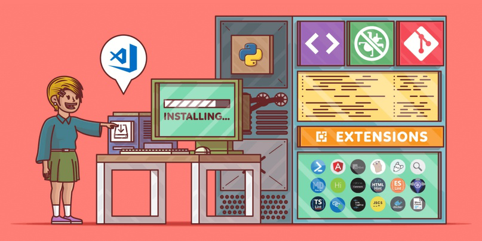
VS Code от Microsoft – легкий и удобный редактор кода, доступный на всех платформах и невероятно гибкий. Это отличный выбор для программирования на Python.
В этой статье мы рассмотрим способы установки и настройки максимально эффективной рабочей среды для разработки.
Статья предназначена для программистов, уже имеющих опыт работы с Python и установивших на свою рабочую машину интерпретатор этого языка программирования (Python 2.7, Python 3.6/3.7, Anaconda или другой дистрибутив).
Установка Python – дело несложное: здесь вы найдете подробное пошаговое руководство для всех популярных ОС. Помните, что в разных операционных системах интерфейс VS Code может немного различаться.
У Установка и настройка Visual Studio Code для разработки на Python
Сразу же отметим, что VS Code не имеет практически ничего общего с его знаменитым тезкой Visual Studio.
Редактор очень легко установить на любую платформу: на официальном сайте есть подробные инструкции для Windows, Mac и Linux.
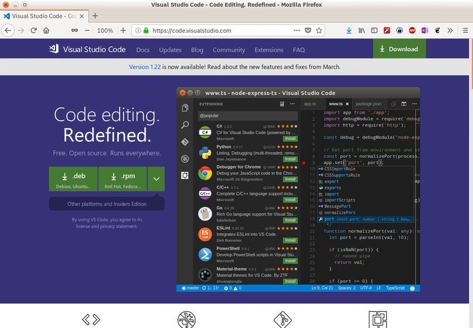
Продукт ежемесячно обновляется и улучшается. В него из коробки встроена поддержка нескольких языков и удобная модель расширения. Пользовательский интерфейс предельно прост и понятен.
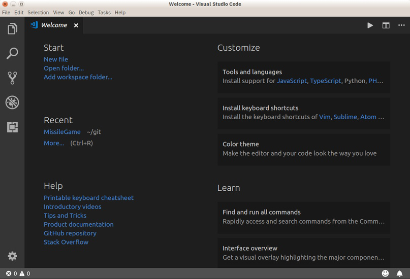
С 2018 года есть расширение для Python. Наблюдать за развитием отношений этой пары можно в блоге Microsoft.
Основные возможности редактора:
Поддержка Python 3.4 и выше, а также Python 2.7
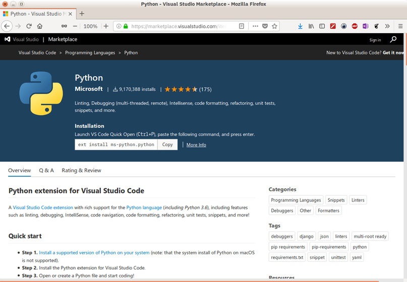
А вот пара полезных подборок для прокачки Python-скиллов:
В редакторе есть и полезные фичи, не связанные напрямую с языком:
И еще несколько крутых возможностей для полного счастья:
Чтобы найти и установить необходимые расширения и темы, нажмите на иконку Расширения на левой панели. Можно искать по ключевым словам и сортировать результаты поиска.
Найдите расширение Python и установите его, чтобы продолжить настройку редактора.
В Visual Studio Code вы легко можете настроить все под себя. Здесь есть параметры пользователя, которые являются глобальными, и параметры рабочей области – локальные для конкретных папок или проектов. Локальные настройки сохраняются в виде .json-файлов в папке .vscode.
Чтобы открыть новый файл, нужно зайти в меню Файл и выбрать пункт Создать или нажать горячую комбинацию клавиш Ctrl+N.
Еще в редакторе есть полезная палитра команд, которую можно вызвать сочетанием Ctrl+Shift+P. Для создания нового файла введите в появившемся поле File: New File и нажмите Enter.
Какой бы способ вы ни выбрали, перед вами должно открыться вот такое окно:
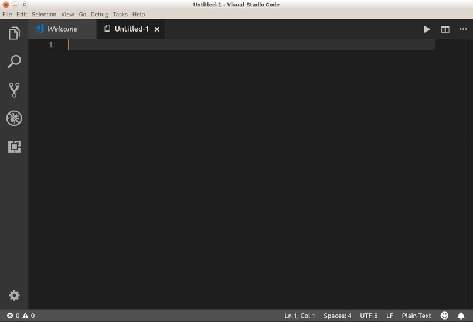
Здесь уже можно вводить код вашей программы.
Для демонстрации возможностей редактора напишем «Решето Эратосфена» – известный алгоритм для нахождения простых чисел до некоторого предела. Начнем кодить:
sieve = [True] * 101
for i in range(2, 100):
На экране это будет выглядеть примерно так:
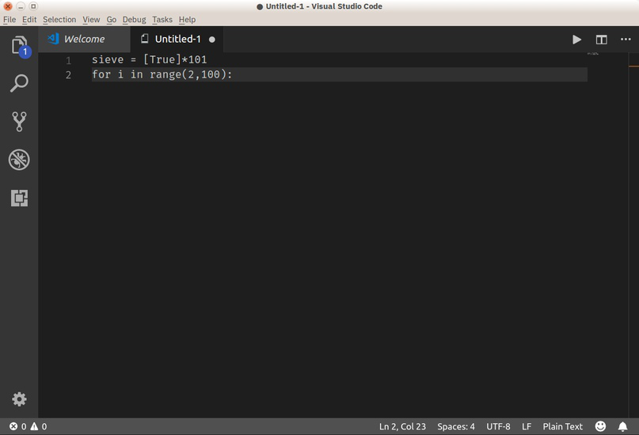
Подождите, что-то не так. Почему-то VS Code не выделяет ключевые слова языка, не дополняет, не форматирует и вообще ничего полезного не делает. Зачем он вообще такой нужен?
Без паники! Просто сейчас редактор не знает, с каким файлом он имеет дело. Смотрите, у него еще нет названия и расширения – только какое-то неопределенное Untitled-1. А в правом нижнем углу написано Plain Text (простой текст).
Установка Python плагина уже произведена, теперь его нужно активировать. Для этого достаточно просто сохранить файл с нужным расширением. Для этого у нас опять же три способа:
Дайте файлу имя sieve.py.
Теперь редактор понял, что имеет дело с кодом на Python, и исправился:
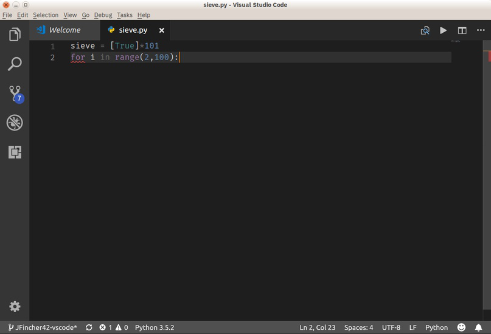
Так гораздо лучше! В правом нижнем углу появилась надпись Python, значит все работает правильно.
Если на вашем компьютере установлено несколько интерпретаторов языка (Python 2.7, Python 3.x или Anaconda), вы можете выбирать нужный. Для этого кликните на индикаторе языка (внизу в левой части экрана) или наберите в палитре команд Python: Select Interpreter.
По умолчанию VS Code поддерживает форматирование с использованием pep8, но вы можете выбрать black или yapf, если хотите.
Допишем код алгоритма:
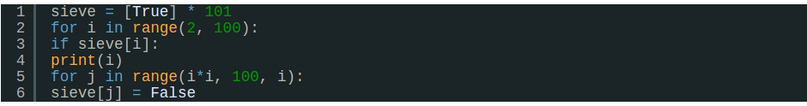
Если вы будете вводить его вручную (без copy-paste), то сможете увидеть IntelliSense редактора в действии.
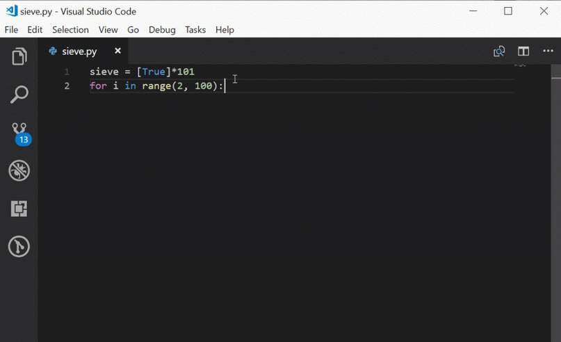
VS Code автоматически делает отступы перед операторами for и if, добавляет закрывающие скобки и предлагает варианты завершения слов.
Чтобы запустить готовую программу, нам даже не нужно выходить из редактора! Просто сохраните файл, вызовите правой кнопкой мыши контекстное меню и выберите в нем пункт Выполнить файл в консоли.
Теперь, когда код завершен, его можно запустить. Для этого не нужно выходить из редактора: Visual Studio Code может запускать эту программу непосредственно в Редакторе. Сохраните файл (с помощью Ctrl+S), затем щелкните правой кнопкой мыши в окне редактора и выберите пункт Запустить файл Python в терминале.
В нижней части окна должна появиться панель терминала с результатом работы программы.
Возможно, вы уже успели увидеть всплывающее окно с сообщением, что проверка кода недоступна и предложением установить линтер. По умолчанию расширение предлагает PyLint. Также поддерживаются и другие инструменты:
Подробные сведения о настройке каждого из них вы можете найти здесь.
Обратите внимание, что линтер настраивается для конкретной рабочей области, а не глобально.
Р Редактирование существующего проекта
Итак, мы научились создавать новые файлы. Это здорово, но все же большую часть времени вам придется работать с уже существующими проектами, которые состоят из множества отдельных файлов и папок.
С редактором можно работать прямо из консоли, открывая и создавая файлы простой командой code filename.py.
Посмотрим, на что способен VS Code на примере уже готового проекта. Это библиотека для анализа уравнений, основанная на «алгоритме маневровой станции» (shunting-yard algorithm) Дийкстры. Вы можете клонировать этот репозиторий, чтобы начать работу.
Открыть созданную локально папку в редакторе можно из терминала:
cd /path/to/projectcode .
VS Code умеет работать с различными средами: virtualenv, pipenv или conda.
Также вы можете открыть папку прямо из интерфейса редактора:
Вот так выглядит открытый проект:
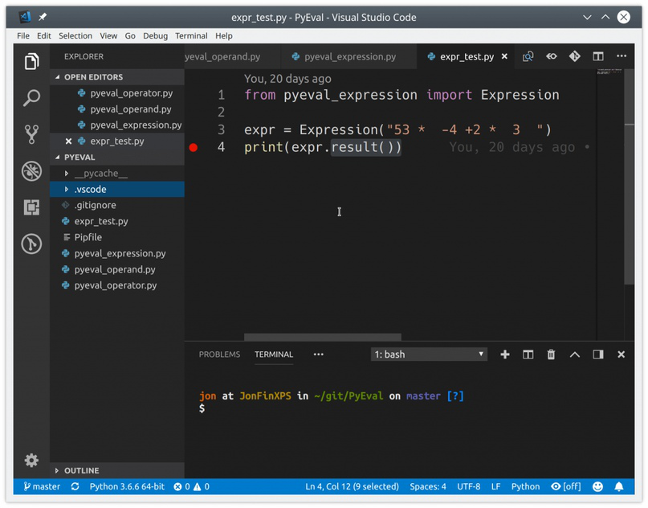
По умолчанию при открытии папки VS Code также открывает файлы, с которыми вы работали в последний раз. Это поведение можно изменить.
Теперь вы можете открывать, редактировать, запускать и отлаживать все файлы проекта, перечисленные в левой панели. Над проводником отображаются все файлы, с которыми вы в данный момент работаете.
Грамотное программирование на Python помимо собственно написания кода включает также его тестирование.
Visual Studio Code умеет автоматически распознавать тесты в unittest, pytest или Nose. В нашем проекте есть модульный тест, который можно использовать для примера.
Чтобы запустить существующие тесты, из любого файла Python вызовите правой кнопкой мыши контекстное меню и выберите пункт Запустить текущий тестовый файл.
Нужно будет указать используемый для тестирования фреймворк, путь поиска и шаблон для имени файлов тестов. Эти настройки сохраняются как параметры рабочей области в локальном файле .vscode/settings.json. Для нашего проекта нужно выбрать unittest, текущую папку и шаблон *_test.py.
Теперь можно запустить все тесты, кликнув на Run Tests в строке состояния или из палитры команд.
Также тесты можно выполнять по отдельности, что позволяет экономить много времени, работая только с неудачными методами.
Результаты тестов отображаются во вкладке Output (раздел Python Test Log выпадающего меню).
Несмотря на то, что VS Code – это просто редактор кода, а не полноценная IDE, он позволяет отлаживать код Python прямо в рабочей области. У него есть много функций, которые должны быть у хорошего отладчика:
Все эти данные можно найти во вкладке Debug левой панели.
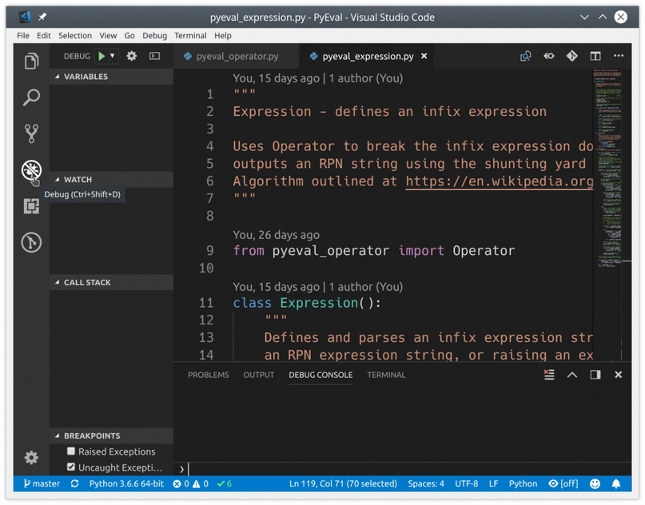
Отладчик может управлять приложениями Python, запущенными во встроенной консоли или внешнем терминале. Он может подключаться к уже запущенным экземплярам Python и даже отлаживать приложения Django и Flask.
Отладить программу на Python так же просто, как запустить отладчик с помощью F5. Используйте F10 и F11 для перехода к следующей функции и для захода в текущую функцию. Shift+F5 – выход из отладчика. Точки останова задаются с помощью клавиши F9 или щелчком мыши в левом поле окна редактора.
Перед началом отладки более сложных проектов, включая приложения Django или Flask, необходимо настроить и выбрать конфигурацию отладки. Сделать это очень просто. Во вкладке Debug найдите раскрывающееся меню Configuration и нажмите Add Configuration:
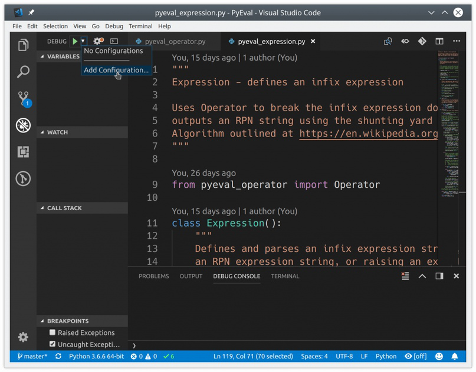
VS Code создаст и откроет файл .vscode/launch.json, в котором можно настроить конфигурации Python, а также отладку приложений.
Вы даже можете выполнять удаленную отладку и дебажить шаблоны Jinja и Django. Закройте launch.json и выберите нужную конфигурацию приложения из раскрывающегося списка.
В VS Code прямо из коробки есть встроенная поддержка управления версиями. По умолчанию подключен Git и GitHub, но вы можете установить поддержку других систем. Все работа происходит во вкладке Source Control левого меню:
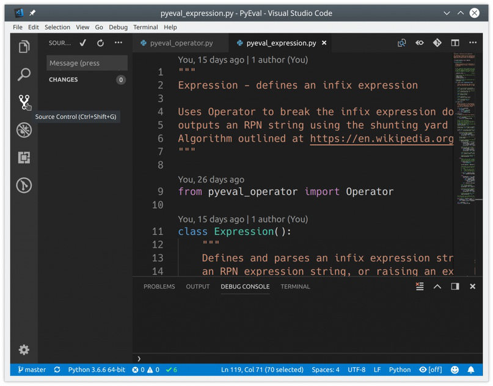
Если в проекте есть папка .git, весь спектр функций Git/GitHub включается автоматически. Вы можете:
Все эти функции доступны прямо из пользовательского интерфейса:
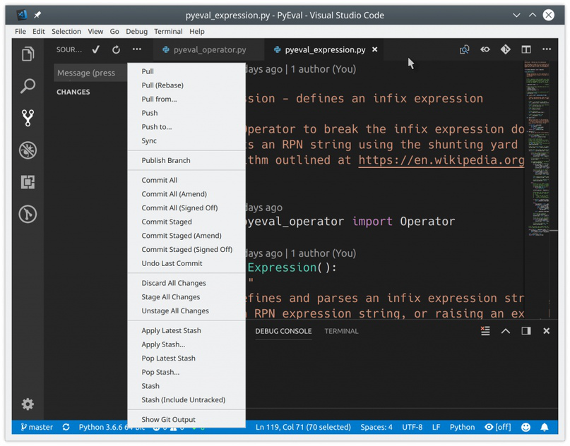
VS Code также распознает изменения, внесенные вне редактора.
Все измененные файлы помечены маркером M, а неотслеживаемые – U. Символ + подготавливает файлы к коммиту. Чтобы сохранить изменения, введите сообщение и нажмите галочку.
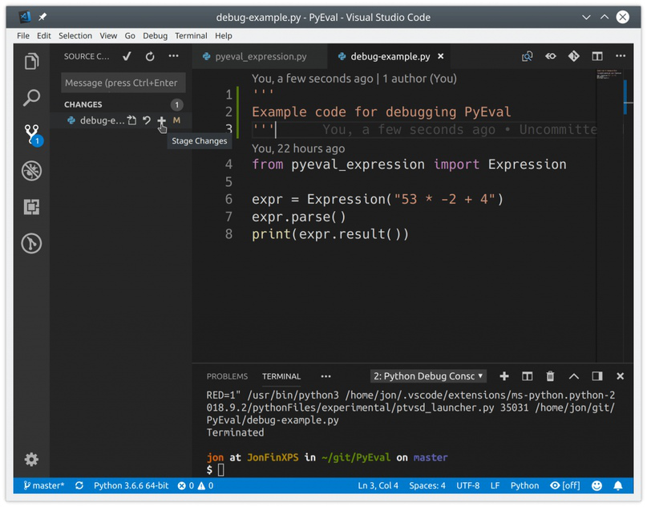
Локальные коммиты можно отправить на GitHub прямо из редактора. Выберите в меню пункт Syncили кликните по значку Synchronize Changes в статус-баре в самом низу редактора (рядом с индикатором текущей ветки).
Visual Studio Code + Python = довольный разработчик
Visual Studio Code – один из самых крутых редакторов кода и замечательный инструмент для разработки. Редактор из коробки предлагает множество полезных возможностей и гибко подстраивается под все ваши потребности. Программирование на Python становится проще и эффективнее.
А какой редактор (или полноценную IDE) для разработки на Python используете вы?
Оригинал статьи: Python Development in Visual Studio Code
Источник: techrocks.ru
***
Читайте на нашем сайте: